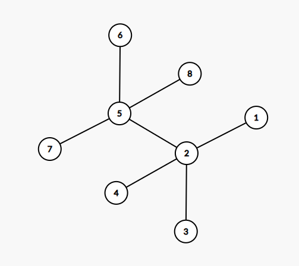
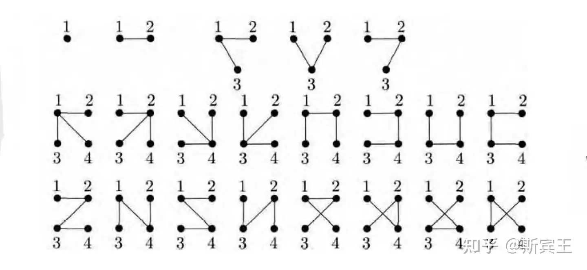
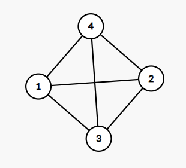
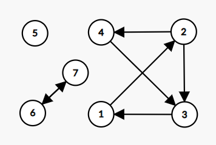

举例说明，设满足上方条件的点为 $p_1,p_2\ (p_1+1<p_2)$ ，那么点 $1$ 到 $p_1$ 构成一个强连通分量、点 $p_1+1$ 到 $p_2$ 构成一个强连通分量。
deg[i] <= 1 时入队。题意：给出一棵节点数为 $2n$ 的树，要求将点分割为 $n$ 个点对，使得点对的点之间的距离和最大。
可以转化为边上问题：对于每一条边，其被利用的次数即为 $\min {{ \text{其左边的点的数量}, \text{其右边的点的数量}}}$ ，使用树形 $\tt dp$ 计算一遍即可。如下图样例，答案为 $10$ 。

vector<int> val(n + 1, 1);
int ans = 0;
function<void(int, int)> dfs = [&](int x, int fa) {
for (auto y : ver[x]) {
if (y == fa) continue;
dfs(y, x);
val[x] += val[y];
ans += min(val[y], k - val[y]);
}
};
dfs(1, 0);
cout << ans << endl;
题意：以哪些点为起点可以无限的在有向图上绕
概括一下这些点可以发现，一类是环上的点，另一类是可以到达环的点。建反图跑一遍 topsort 板子，根据容斥，未被移除的点都是答案 See 。
题意：添加最少的边，使得有向图变成一个 SCC
将原图的 SCC 缩点，统计缩点后的新图上入度为 $0$ 和出度为 $0$ 的点的数量 $cnt_{\tt in}、cnt_{\tt out}$ ，答案即为 $\max(cnt_{\tt in}, cnt_{\tt out})$ 。过程大致是先将一个出度为 $0$ 的点和一个入度为 $0$ 的点相连，剩下的点随便连 See 。
题意：添加最少的边，使得无向图变成一个 E-DCC
将原图的 E-DCC 缩点，统计缩点后的新图上入度为 $1$ 的点（叶子结点）的数量 $cnt$ ，答案即为 $\left \lceil \frac{cnt}{2} \right \rceil$ 。过程大致是每次找两个叶子结点（但是还有一些条件限制）相连，若最后余下一个点随便连 See 。
题意：在树上找到一个最大的连通块，使得这个联通内点权和边权之和最大，输出这个值，数据中存在负数的情况。
使用 dfs 即可解决。
LL n, point[N];
LL ver[N], head[N], nex[N], tot; bool v[N];
map<pair<LL, LL>, LL> edge;
// void add(LL x, LL y) {}
void dfs(LL x) {
for (LL i = head[x]; i; i = nex[i]) {
LL y = ver[i];
if (v[y]) continue;
v[y] = true; dfs(y); v[y] = false;
}
for (LL i = head[x]; i; i = nex[i]) {
LL y = ver[i];
if (v[y]) continue;
point[x] += max(point[y] + edge[{x, y}], 0LL);
}
}
void Solve() {
cin >> n;
FOR(i, 1, n) cin >> point[i];
FOR(i, 2, n) {
LL x, y, w; cin >> x >> y >> w;
edge[{x, y}] = edge[{y, x}] = w;
add(x, y), add(y, x);
}
v[1] = true; dfs(1); LL ans = -MAX18;
FOR(i, 1, n) ans = max(ans, point[i]);
cout << ans << endl;
}
题意：给定 $n$ 个顶点，可以构建出多少棵标记树？

$n\le 4$ 时的样例如上，通项公式为 $n^{n-2}$ 。
一个 $n$ 个点 $m$ 条边的带标号无向图有 $k$ 个连通块。我们希望添加 $k-1$ 条边使得整个图连通，求方案数量 See 。
设 $s_i$ 表示每个连通块的数量，通项公式为 $\displaystyle n^{k-2}\cdot\prod_{i=1}^ks_i$ ，当 $k < 2$ 时答案为 $1$ 。
const int N = 2e5 + 7, M = 1e6 + 7;
int n, m, s, e; int d[N][2], v[N][2]; // 0 代表最短路， 1 代表次短路
Z num[N][2];
void Clear() {
for (int i = 1; i <= n; ++ i) h[i] = edge[i] = 0;
tot = 0;
for (int i = 1; i <= n; ++ i) num[i][0] = num[i][1] = v[i][0] = v[i][1] = 0;
for (int i = 1; i <= n; ++ i) d[i][0] = d[i][1] = INF;
}
int ver[M], ne[M], h[N], edge[M], tot;
void add(int x, int y, int w) {
ver[++ tot] = y, ne[tot] = h[x], h[x] = tot;
edge[tot] = w;
}
void dji() {
priority_queue<PIII, vector<PIII>, greater<PIII> > q; q.push({0, s, 0});
num[s][0] = 1; d[s][0] = 0;
while (!q.empty()) {
auto [dis, x, type] = q.top(); q.pop();
if (v[x][type]) continue; v[x][type] = 1;
for (int i = h[x]; i; i = ne[i]) {
int y = ver[i], w = dis + edge[i];
if (d[y][0] > w) {
d[y][1] = d[y][0], num[y][1] = num[y][0];
// 如果找到新的最短路，将原有的最短路数据转化为次短路
q.push({d[y][1], y, 1});
d[y][0] = w, num[y][0] = num[x][type];
q.push({d[y][0], y, 0});
}
else if (d[y][0] == w) num[y][0] += num[x][type];
else if (d[y][1] > w) {
d[y][1] = w, num[y][1] = num[x][type];
q.push({d[y][1], y, 1});
}
else if (d[y][1] == w) num[y][1] += num[x][type];
}
}
}
void Solve() {
cin >> n >> m >> s >> e;
Clear(); //多组样例务必完全清空
for (int i = 1; i <= m; ++ i) {
int x, y, w; cin >> x >> y; w = 1;
add(x, y, w), add(y, x, w);
}
dji();
Z ans = num[e][0];
if (d[e][1] == d[e][0] + 1) {
ans += num[e][1]; // 只有在次短路满足条件时才计算（距离恰好比最短路大1）
}
cout << ans.val() << endl;
}
原题：给出一张有向完全图，输出任意一个三元环上的全部元素 See 。使用 dfs，复杂度 $\mathcal O(N+M)$，可以扩展到非完全图和无向图。
int n;
cin >> n;
vector<vector<int>> a(n + 1, vector<int>(n + 1));
for (int i = 1; i <= n; ++i) {
for (int j = 1; j <= n; ++j) {
char x;
cin >> x;
if (x == '1') a[i][j] = 1;
}
}
vector<int> vis(n + 1);
function<void(int, int)> dfs = [&](int x, int fa) {
vis[x] = 1;
for (int y = 1; y <= n; ++y) {
if (a[x][y] == 0) continue;
if (a[y][fa] == 1) {
cout << fa << " " << x << " " << y;
exit(0);
}
if (!vis[y]) dfs(y, x); // 这一步的if判断很关键
}
};
for (int i = 1; i <= n; ++i) {
if (!vis[i]) dfs(i, -1);
}
cout << -1;
原题：给出一张有向带权图，求解图上最小环的长度、有多少个这样的最小环 See 。使用 floyd，复杂度为 $\mathcal O(N^3)$ ，可以扩展到无向图。
LL Min = 1e18, ans = 0;
for (int k = 1; k <= n; k++) {
for (int i = 1; i <= n; i++) {
for (int j = 1; j <= n; j++) {
if (dis[i][j] > dis[i][k] + dis[k][j]) {
dis[i][j] = dis[i][k] + dis[k][j];
cnt[i][j] = cnt[i][k] * cnt[k][j] % mod;
} else if (dis[i][j] == dis[i][k] + dis[k][j]) {
cnt[i][j] = (cnt[i][j] + cnt[i][k] * cnt[k][j] % mod) % mod;
}
}
}
for (int i = 1; i < k; i++) {
if (a[k][i]) {
if (a[k][i] + dis[i][k] < Min) {
Min = a[k][i] + dis[i][k];
ans = cnt[i][k];
} else if (a[k][i] + dis[i][k] == Min) {
ans = (ans + cnt[i][k]) % mod;
}
}
}
}
原题：给出一张无向图，求解图上最小环的长度、有多少个这样的最小环 See 。使用 floyd，可以扩展到有向图。
int flody(int n) {
for (int i = 1; i <= n; ++ i) {
for (int j = 1; j <= n; ++ j) {
val[i][j] = dis[i][j]; // 记录最初的边权值
}
}
int ans = 0x3f3f3f3f;
for (int k = 1; k <= n; ++ k) {
for (int i = 1; i < k; ++ i) { // 注意这里是没有等于号的
for (int j = 1; j < i; ++ j) {
ans = min(ans, dis[i][j] + val[i][k] + val[k][j]);
}
}
for (int i = 1; i <= n; ++ i) { // 往下是标准的flody
for (int j = 1; j <= n; ++ j) {
dis[i][j] = min(dis[i][j], dis[i][k] + dis[k][j]);
}
}
}
return ans;
}
使用 bfs，复杂度为 $\mathcal O(N^2)$ 。
auto bfs = [&] (int s) {
queue<int> q; q.push(s);
dis[s] = 0;
fa[s] = -1;
while (q.size()) {
auto x = q.front(); q.pop();
for (auto y : ver[x]) {
if (y == fa[x]) continue;
if (dis[y] == -1) {
dis[y] = dis[x] + 1;
fa[y] = x;
q.push(y);
}
else ans = min(ans, dis[x] + dis[y] + 1);
}
}
};
for (int i = 1; i <= n; ++ i) {
fill(dis + 1, dis + 1 + n, -1);
bfs(i);
}
cout << ans;
原题：给出一张无向图，输出简单环的数量 See 。注意这里环套环需要分别多次统计，下图答案应当为 $7$。使用状压 dp，复杂度为 $\mathcal O(M\cdot2^N)$，可以扩展到有向图。

int n, m;
cin >> n >> m;
vector<vector<int>> G(n);
for (int i = 0; i < m; i++) {
int u, v;
cin >> u >> v;
u--, v--;
G[u].push_back(v);
G[v].push_back(u);
}
vector<vector<LL>> dp(1 << n, vector<LL>(n));
for (int i = 0; i < n; i++) dp[1 << i][i] = 1;
LL ans = 0;
for (int st = 1; st < (1 << n); st++) {
for (int u = 0; u < n; u++) {
if (!dp[st][u]) continue;
int start = st & -st;
for (auto v : G[u]) {
if ((1 << v) < start) continue;
if ((1 << v) & st) {
if ((1 << v) == start) {
ans += dp[st][u];
}
} else {
dp[st | (1 << v)][v] += dp[st][u];
}
}
}
}
cout << (ans - m) / 2 << "\n";
原题：给出一张无向图，不含自环与重边，输出任意一个简单环的大小以及其上面的全部元素 See 。注意输出的环的大小是随机的，不等价于最小环。
由于不含重边与自环，所以环的大小至少为 $3$ ，使用 dfs 处理出 dfs 序，复杂度为 $\mathcal O(N+M)$，可以扩展到有向图；如果有向图中二元环也允许计入答案，则需要删除下方标注行。
vector<int> dis(n + 1, -1), fa(n + 1);
auto dfs = [&](auto self, int x) -> void {
for (auto y : ver[x]) {
if (y == fa[x]) continue; // 二元环需删去该行
if (dis[y] == -1) {
dis[y] = dis[x] + 1;
fa[y] = x;
self(self, y);
} else if (dis[y] < dis[x]) {
cout << dis[x] - dis[y] + 1 << endl;
int pre = x;
cout << pre << " ";
while (pre != y) {
pre = fa[pre];
cout << pre << " ";
}
cout << endl;
exit(0);
}
}
};
for (int i = 1; i <= n; i++) {
if (dis[i] == -1) {
dis[i] = 0;
dfs(dfs, 1);
}
}
原题：给出一张有向图，输出环的数量。注意这里环套环仅需要计算一次，数据包括二元环和自环，下图例应当输出 $3$ 个环。使用 dfs 染色法，复杂度为 $\mathcal O(N+M)$。

int ans = 0;
vector<int> vis(n + 1);
auto dfs = [&](auto self, int x) -> void {
vis[x] = 1;
for (auto y : ver[x]) {
if (vis[y] == 0) {
self(self, y);
} else if (vis[y] == 1) {
ans++;
}
}
vis[x] = 2;
};
for (int i = 1; i <= n; i++) {
if (!vis[i]) {
dfs(dfs, i);
}
}
cout << ans << endl;
NowCoder ，带自环重边、不连通。
signed main() {
int n, m;
cin >> n >> m;
vector<vector<array<int, 2>>> ver(n + 1);
for (int i = 1; i <= m; i++) {
int x, y;
cin >> x >> y;
ver[x].push_back({y, i});
}
vector<int> vis(n + 1);
vector<array<int, 2>> fa(n + 1);
auto dfs = [&](auto self, int x, int from) -> void {
vis[x] = 1;
for (auto [y, id] : ver[x]) {
if (id == from) continue;
if (!vis[y]) {
fa[y] = {x, id};
self(self, y, id);
} else if (vis[y] == 1) {
vector<int> V = {y}, E = {id};
for (int pre = x; pre != y; pre = fa[pre][0]) {
V.push_back(pre);
E.push_back(fa[pre][1]);
}
int l = V.size();
cout << l << "\n";
reverse(V.begin(), V.end());
reverse(E.begin(), E.end());
rotate(E.begin(), E.begin() + 1, E.end());
for (int i = 0; i < l; i++) {
cout << V[i] << " \n"[i == l - 1];
}
for (int i = 0; i < l; i++) {
cout << E[i] << " \n"[i == l - 1];
}
exit(0);
}
}
vis[x] = 2;
};
for (int i = 1; i <= n; i++) {
if (!vis[i]) {
dfs(dfs, i, -1);
}
}
cout << -1 << "\n";
}
NowCoder ，带自环重边、不连通。
signed main() {
int n, m;
cin >> n >> m;
vector<vector<array<int, 2>>> ver(n + 1);
for (int i = 1; i <= m; i++) {
int x, y;
cin >> x >> y;
ver[x].push_back({y, i});
ver[y].push_back({x, i});
}
vector<int> vis(n + 1);
vector<array<int, 2>> fa(n + 1);
auto dfs = [&](auto self, int x, int from) -> void {
vis[x] = 1;
for (auto [y, id] : ver[x]) {
if (id == from) continue;
if (!vis[y]) {
fa[y] = {x, id};
self(self, y, id);
} else if (vis[y] == 1) {
vector<int> ans1 = {y}, ans2 = {id};
for (int pre = x; pre != y; pre = fa[pre][0]) {
ans1.push_back(pre);
ans2.push_back(fa[pre][1]);
}
int l = ans1.size();
cout << l << "\n";
for (int i = 0; i < l; i++) {
cout << ans1[i] << " \n"[i == l - 1];
}
for (int i = 0; i < l; i++) {
cout << ans2[i] << " \n"[i == l - 1];
}
exit(0);
}
}
vis[x] = 2;
};
for (int i = 1; i <= n; i++) {
if (!vis[i]) {
dfs(dfs, i, -1);
}
}
cout << -1 << "\n";
}
原题：给定一个环以一些额外边，对于每一条额外边判定其位于环外还是环内，使得任意两条无重合顶点的额外边都不相交（即这张图构成平面图）See1, See2 。
使用 2-sat。考虑全部边都位于环内，那么“一条边完全包含另一条边”、“两条边完全没有交集”这两种情况都不会相交，可以直接跳过这两种情况的讨论。
signed main() {
int n, m;
cin >> n >> m;
vector<pair<int, int>> in(m);
for (int i = 0, x, y; i < m; i++) {
cin >> x >> y;
in[i] = minmax(x, y);
}
TwoSat sat(m);
for (int i = 0; i < m; i++) {
auto [s, e] = in[i];
for (int j = i + 1; j < m; j++) {
auto [S, E] = in[j];
if (s < S && S < e && e < E || S < s && s < E && E < e) {
sat.add(i, 0, j, 0);
sat.add(i, 1, j, 1);
}
}
}
if (!sat.work()) {
cout << "Impossible\n";
return 0;
}
auto ans = sat.answer();
for (auto it : ans) {
cout << (it ? "out" : "in") << " ";
}
}